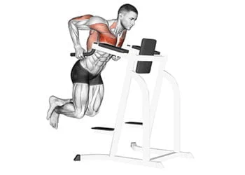

Développé couché

Le développé couché, également connu sous le nom de "bench press" en anglais,
est l'un des exercices de musculation les plus populaires pour développer la force et la masse musculaire du haut du corps
Développé militaire

Le développé militaire, également appelé "military press" en anglais, est un exercice de musculation qui cible principalement les muscles deltoïdes (épaules),
mais il sollicite également les muscles triceps et les muscles du haut du dos.
Dips

Les dips sont un exercice de musculation qui cible principalement les muscles pectoraux, les triceps et les muscles deltoïdes antérieurs.
Écartés à la poulie

Les écartés à la poulie, également connus sous le nom de "cable fly" en anglais, sont un exercice de musculation qui cible principalement les muscles pectoraux,
mais qui sollicite également les muscles deltoïdes antérieurs et les muscles du haut du dos.
Élévations latérales

Les élévations latérales sont un exercice de musculation qui cible principalement les muscles deltoïdes (épaules),
en particulier les muscles deltoïdes latéraux.
Développé couché incliné barre

Le développé couché incliné avec barre est une variante de l'exercice de développé couché qui cible principalement les muscles pectoraux supérieurs,
les muscles deltoïdes antérieurs et les triceps
Écartés couché à la poulie

Les écartés couché à la poulie, également connus sous le nom de "cable chest fly" en anglais, sont un exercice de musculation qui cible principalement les muscles pectoraux
Développé épaules avec haltères

Le développé d'épaules avec haltères, également connu sous le nom de "shoulder press",
est un excellent exercice pour développer la force et la masse musculaire des muscles deltoïdes (épaules) ainsi que les muscles stabilisateurs de l'épaule.
Pompes piquées

Les pompes piquées ou pompes pour les épaules (en anglais pike push-up) sont un excellent exercice pour muscler les deltoïdes antérieurs,
les triceps et le haut des pectoraux au poids de corps